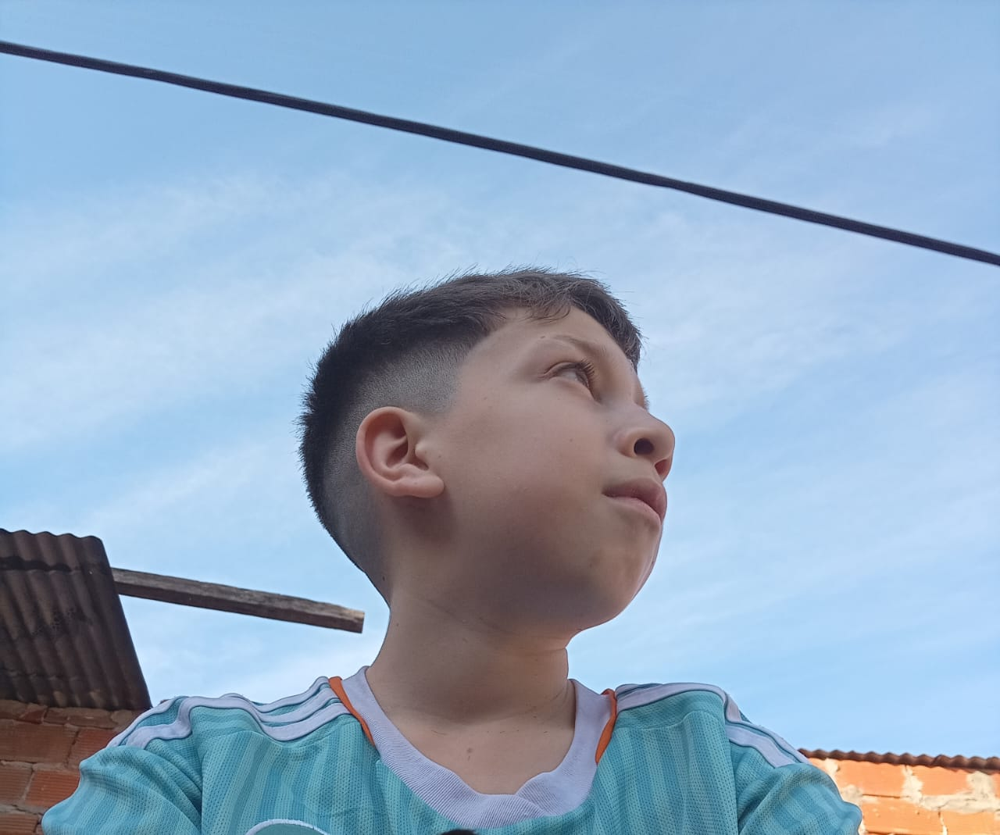

BIENVENIDO A MI SITIO SOY SANTI
Sobre mí
Hola, soy Santi. Me encantan los videojuegos de aventura, acción y estrategia. Me gusta aprender sobre tecnología y compartir mis experiencias en cada juego que disfruto.
Mis juegos favoritos
Roblox es una plataforma de videojuegos en línea donde los usuarios pueden jugar y crear sus propios juegos. Permite a millones de jugadores explorar mundos creados por otros, usar su imaginación y compartir experiencias con amigos.
Minecraft es un videojuego de construcción y aventura donde los jugadores pueden explorar mundos abiertos, recolectar recursos y crear estructuras libremente con bloques. Fomenta la creatividad, la exploración y el trabajo en equipo.

Clash Royale es un juego de estrategia en tiempo real donde los jugadores usan cartas de tropas, hechizos y defensas para destruir las torres del oponente. Combina acción, táctica y partidas rápidas cont